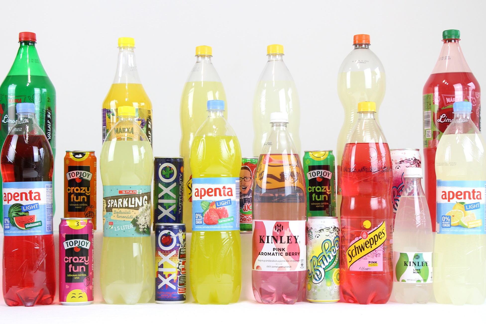

Üdvözlünk a FreshFizz világában! Cégünk célja, hogy minden nap frissítő és különleges ízekkel tegye jobbá a pillanataidat. Termékeink gondosan válogatott alapanyagokból készülnek, hogy a lehető legjobb minőséget és ízélményt nyújtsák.
A FreshFizz üdítőitalok tökéletes választást jelentenek baráti találkozókhoz, családi programokhoz vagy akár egy hosszú nap utáni felfrissüléshez. Kínálatunkban megtalálhatók a klasszikus ízek, valamint különleges, gyümölcsös variációk is.
Termékeink
Üdítőink széles választékban érhetők el. A friss citromos, narancsos és bogyós ízek mellett folyamatosan dolgozunk új recepteken is, hogy mindig tudjunk valami újat mutatni vásárlóinknak.
Galéria
Tekintsd meg néhány termékünket és pillanatképet a FreshFizz világából!

Hol találsz meg minket?
Látogass el hozzánk, vagy keresd termékeinket üzletekben országszerte! Az alábbi térképen megtalálod központunk helyét.
Rólunk
A FreshFizz egy modern üdítőital-márka, amely a frissességet és a természetes ízeket helyezi előtérbe. Célunk, hogy olyan italokat készítsünk, amelyek nemcsak finomak, hanem kellemes felfrissülést is nyújtanak a mindennapokban. Termékeinket gondosan válogatott alapanyagokból készítjük, és folyamatosan fejlesztjük kínálatunkat.
Küldetésünk
Hiszünk abban, hogy egy jó üdítő több, mint egy ital. Egy pillanatnyi kikapcsolódás, egy friss élmény, amely feldobhatja a napot. Küldetésünk, hogy minőségi és ízletes italokat kínáljunk minden korosztály számára.
Ízeink
Kínálatunkban megtalálhatók a klasszikus és a különleges ízek is:
Friss citrom
Narancs
Erdei gyümölcs
Lime-menta
Mangó
Eper
Minden italunk gondosan kialakított recept alapján készül, hogy tökéletes ízharmóniát biztosítson.
Miért válaszd a FreshFizz-t?
Friss és különleges ízek
Modern és minőségi gyártás
Folyamatosan bővülő termékkínálat
Fiatalos és lendületes márka
Fenntarthatóság
Fontos számunkra a környezet védelme. Ezért törekszünk újrahasznosítható csomagolások használatára, és igyekszünk csökkenteni gyártási folyamataink környezeti hatását.
Kapcsolat
Ha kérdésed van termékeinkkel kapcsolatban, vagy szeretnél együttműködni velünk, keress minket bizalommal!